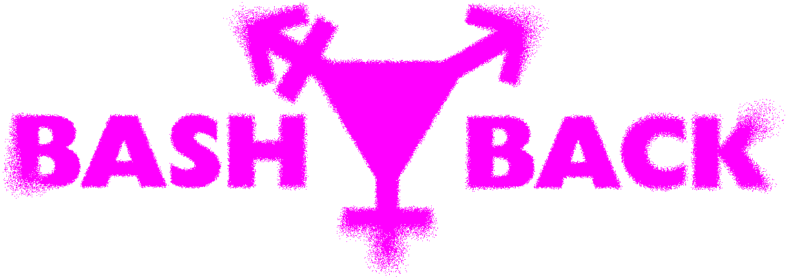

Transgender people in the UK have spent too long being made the victim.
Victims of verbal and physical abuse, of an NHS system rigged against us and GICs designed to fail us, of vicious microaggressions in the workplace, and of an incestuous government and news media environment that weaponises our demand for basic human decency as an ugly game of political point-scoring. Every day we face new attempts to erase us from public life.
We are so tired, and so angry — and while we take to the streets time and time again with our flags and our banners and our speeches, nothing seems to work.
So what do we do when reason fails and the queerbashing continues unending?
We BASH BACK.
BASH BACK is a trans-led direct action project focused on total transgender liberation, showing that we cannot be silenced, we cannot be beaten down and we are not afraid to stand our ground.
Organisations that promote transphobic rhetoric — from banning hormones and puberty blockers, to confining us to or defining us out of categories of woman and man, to promoting conversion therapy and facilitating hideous harassment campaigns — should come to expect us.
Because we will not put up with the abuse any more, we will no longer see our sisters murdered, we will not be shoved back into the closet and left to die in the dark.
All of our targets have blood on their hands.
We refuse to let them wash it off in peace.
Welcome to a new era of trans rage.
